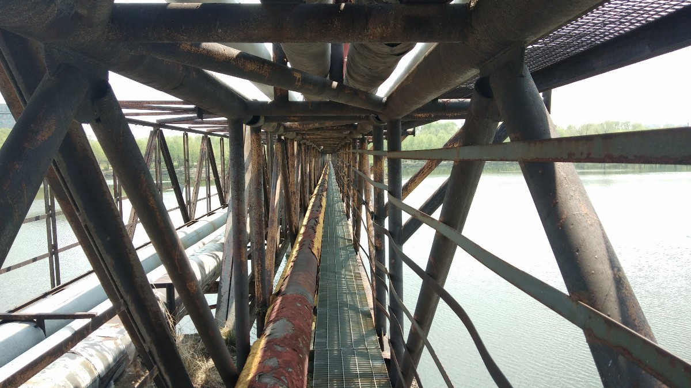

出游记
临近中午-–—十一点钟时，去食堂吃饭，我觉得自己可以出去走走。我把它当作大学的最后一次出游（没那么夸张）。收拾好书包，带着伞、水杯、卫生纸这些必须物品后就出发了。从学校东边的机动门出发，沿路向东行走一段路程，再向北走……
路上遇到一些人和事物，我记下来，留着以后回忆。
因为不了解，所以不想了解。
这是突然所得的想法。想想自己不就是如此吗？对很多事情抱着轻视的态度，觉得低下，我根本就不了解事情的来龙去脉，也疏于探究细节。如果我能按捺（nà）住自己的情绪，冷静细致地客观看待事情本身，相较于放纵自己的情绪，我会体味到更多的内容。
忽然闻到一阵花香，当我靠上去仔细闻的时候，却什么也闻不到。
快乐总是不期而至，倘若仔细寻觅，无所踪。
我看到一对老夫妻，准备穿过车流湍急的马路。
其实，我看到的东西，如果通过照片是较难分辨的。从二维照片的角度来看，我想让你看到的，是中间椅子上方的树木。它弯成了仙鹤的形貌。
 
这四张照片分别是从东、西、南、北四个角度拍下，我克服了自己对于死亡的某种程度上的恐惧完成了这次拍摄。我记得自己第一次走上这个管道通路时，心里很害怕，只想着快点走过去，自己别掉到河里，如果掉进河里就意味着死亡，因为别人来不及救我。所以本来的想法是：来瞻仰一次这条路，然后从另一条心理上更安全的路过河。当我来到入口处，看到管道，旁边的一位阿姨问我干什么，我回答说想过河，阿姨说你过去吧，上边很安全。我的心落地了。
我开始走这条路，那时我有两个想法：一个是，阿姨没有劝阻我别过河，我觉得这是一种对自己的认可，我已经是一个成年人，很清楚自己应该为自己的生命负责；另一个是，这条路没变啊，为什么阿姨说以前路上铺的都是板子呢，后来一想：可能阿姨没有走过这条路，只是在入口处徘徊。我怀着一种复杂的心情过河-–—既兴奋又害怕，每次拍完我都要把手机放到内兜，因为手机可能掉到河里。
你看看后两张，无论去路，还是来路，都一样遥不可及、没有尽头，只有到达才会发觉。这其实和人生没有分别，人被出生于世界，死亡来临的那一刻才知道要走。
看到它时，我是惊讶的-–—走了那么远，竟然才走到桥的一半。
沿着一些布满植物的废弃水泥筑成的破败的阶梯，我爬上山丘又下来，这张是下山丘之前拍的。
一个三叉路，我从一条路来，有两条路供我选择，我选择了左边一条，这条路让我欣赏到满树桃花，但它不是下山的路；很显然，另外的第三条路能让我下山，可是我却无法欣赏淡雅的桃花。选择必有所得所失，不必执拗于失去的，珍惜能把握的。下面的特写很美，送给你吧，可爱的人儿！

云彩与山丘，云彩去山丘家做客
很奇怪：水边的土地为什么皲裂成这般模样。
我仔细地看了一会，那个黑色的部分真的是一个人！
我以为它们是紫藤萝，不过不是。想起初中学过的课文1：
从未见过开得这样盛的藤萝，只见一片辉煌的淡紫色，像一条瀑布，从空中垂下，不见其发端，也不见其终极，只是深深浅浅的紫，仿佛在流动，在欢笑，在不停地生长。紫色的大条幅上，泛着点点银光，就像迸溅的水花。仔细看时，才知道那是每一朵紫花中最浅淡的部分，在和阳光互相挑逗。
花和人都会遇到各种各样的不幸，但是生命的长河是无止境的。我抚摸了一下那小小的紫色的花舱，那里装满生命的酒酿，它张满了帆，在这闪光的花的河流上航行。它是万花中的一朵，也正是一朵一朵花，组成了万花灿烂的流动的瀑布。
上周日拍下的两朵花：